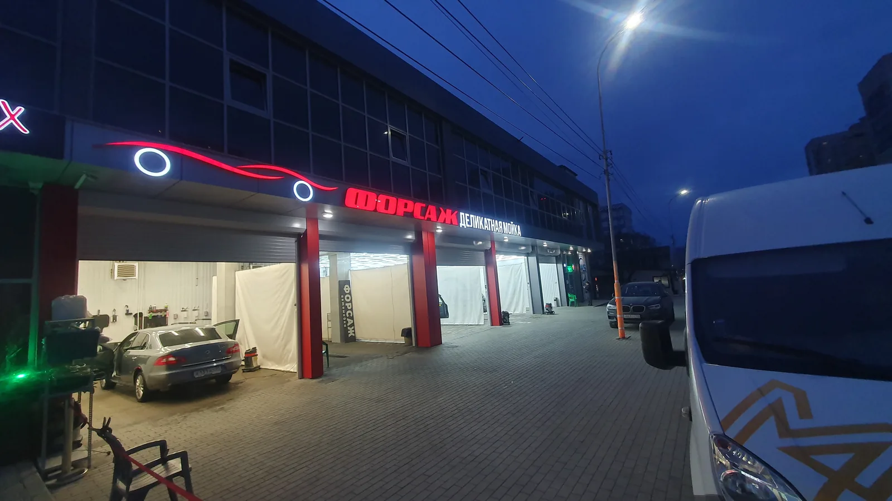
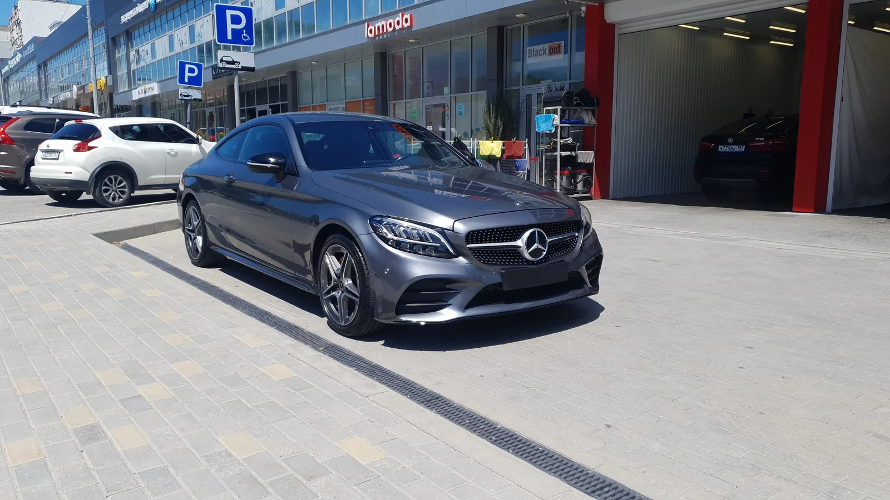
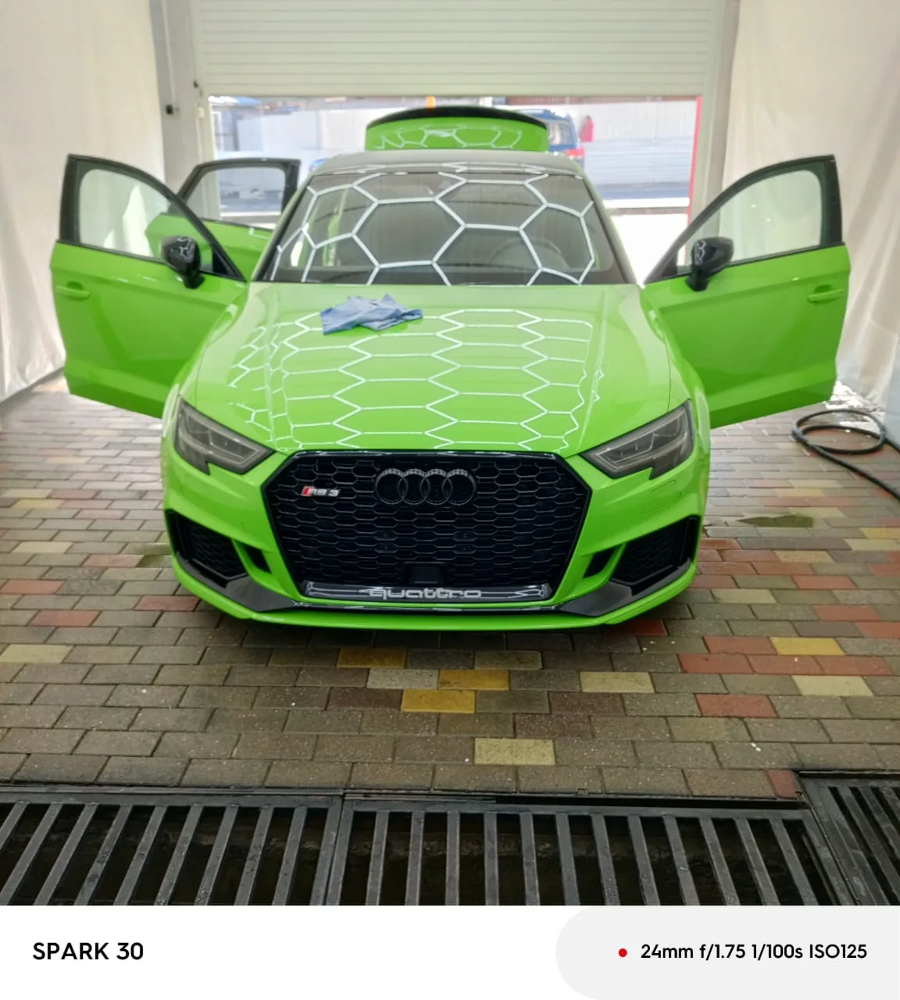
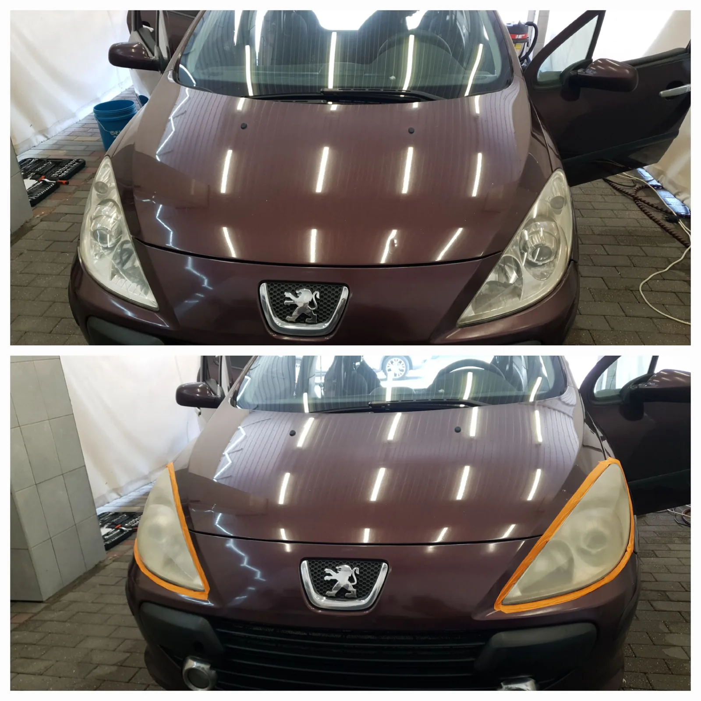

Детейлинг-центр · Новороссийск
Детейлинг на Хворостянского – машина выезжает «будто из салона»
Мойка и детейлинг с подходом фанатов своего дела: показывают и рассказывают то, что не замечали сами, дают рекомендации по уходу. Результат по отзывам – «машина выезжает будто из салона».
- Рейтинг 4,5 – 74 оценки на Яндекс.Картах
- ул. Хворостянского, 4
- Мойка, детейлинг, оклейка плёнкой, фары

Что вы получаете в Форсаже
Входит
- Осмотр и объяснения – «всё показали и рассказали», по отзывам
- Рекомендации по уходу за автомобилем
- Возможность оставить машину на день или полдня
- Результат «будто из салона» – по отзывам
Отдельно, если нужно
- Оклейка плёнкой – кузов и салон (фото работ в карточке)
- Работа с фарами – есть фото «до/после» в карточке
Услуги
Прайса на карточке нет – стоимость называем по фото или при осмотре.
Детейлинг
- Детейлинг-мойкакузов и салонуточнить
- Полировка и восстановление фаресть фото «до/после» в карточкеуточнить
- Оклейка плёнкойкузов, стойки салонауточнить
- Детейлинг моторного отсекафото работ в карточкеуточнить
Точную сумму называем после осмотра – до начала работ.
Как проходит работа
- 01
Пишете или звоните
Расскажите о машине и задаче – или просто приезжайте на Хворостянского, 4.
- 02
Согласовываем объём
Всё покажут и расскажут, в том числе то, что не замечали сами – по отзывам.
- 03
Оставляете машину
Не торопитесь – оставьте машину на день или полдня: «результат не оставит равнодушным», по отзыву.
- 04
Забираете результат
Машина выезжает «будто из салона» – так пишут клиенты.



Чего у нас не бывает
Не бывает «и так сойдёт»
«Добросовестно всегда всё делают и на все 1000» – по отзыву.
Не бывает молчания
«Всё показали и рассказали, дали рекомендации по уходу» – по отзыву.
Не бывает спешки за ваш счёт
Можно оставить машину на день или полдня – чтобы сделать всё как надо.
Не бывает необъяснённой цены
Стоимость называем по фото или при осмотре – до начала работ.
Отзывы с Яндекс.Карт
«Лучшая мойка в Новороссийске, ценник выше обычного, но результат того стоит, машина выезжает будто из салона, всем советую!»
Владимир Костюков · Яндекс.Карты
«Первоклассные специалисты, сразу стало понятно по результату, т.к. сам увлекаюсь этим делом) и такого уровня и превосходного качества мойки и вообще подхода к такой работе еще не видел! Клиентоориентированность на высоте, все показали и рассказали, даже то, что я сам не замечал, дали рекомендации по уходу за моим авто.»
Максим Гулиев · Яндекс.Карты
«Несколько лет подряд я с семьей отдыхаю в Новороссийске, и последние три года я мою машину именно в Форсаж! Ребята фанаты своего дела, добросовестно всегда все делают и на все 1000. Если вы не торопитесь, запишитесь оставьте машину на день или пол дня… и результат не оставит равнодушным! Советую!»
Михаил Искандарян · Яндекс.Карты
Отзывы с карточки на Яндекс.Картах, без правок.
Частые вопросы
Сколько стоит?
«Ценник выше обычного, но результат того стоит» – так пишут клиенты. Точную сумму называем по фото или при осмотре.
Можно оставить машину надолго?
Да: «запишитесь, оставьте машину на день или полдня – и результат не оставит равнодушным», по отзыву.
Работаете с фарами?
Да – в карточке есть фото полировки фар «до/после».
Как записаться?
Напишите в MAX по ссылке на сайте или позвоните.
Запишитесь в Форсаж
- Адрес
- Новороссийск, ул. Хворостянского, 4
- Телефон
- +7 (918) 959-12-22